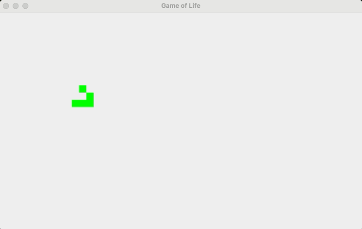

Abschlussprojekt
Programmierung
Zum Abschluss dieses Kurses entwickelt ihr ein eigenständiges, vollständiges Java-Programm: eine Simulation des zellulären Automaten "Game of Life". Dabei kommt alles zum Einsatz, was ihr in diesem Kurs gelernt habt.
Die Spielregeln
Ein Gitter besteht aus Zellen, die entweder lebendig oder tot sind. In jeder Runde gilt gleichzeitig für alle Zellen:
- Eine lebende Zelle mit 2 oder 3 lebenden Nachbarn bleibt am Leben, sonst stirbt sie.
- Eine tote Zelle mit genau 3 lebenden Nachbarn wird lebendig.
Projekt anlegen
Legt ein neues Projekt mit dem Namen GameOfLife an (Java-Application with Ant, wie gewohnt aus der Setup-Anleitung). Die Hauptklasse heißt ebenfalls GameOfLife. Kopiert folgendes Grundgerüst bevor ihr mit den Aufgaben startet:
import javax.swing.*;
import java.awt.*;
public class GameOfLife extends JPanel {
static final int BREITE = 50, HOEHE = 30, ZELLGROESSE = 15;
static boolean[][] gitter = new boolean[HOEHE][BREITE];
public static void main(String[] args) {
initialisieren();
GameOfLife panel = new GameOfLife();
JFrame fenster = new JFrame("Game of Life");
fenster.add(panel);
fenster.setSize(BREITE * ZELLGROESSE, HOEHE * ZELLGROESSE + 30);
fenster.setDefaultCloseOperation(JFrame.EXIT_ON_CLOSE);
fenster.setVisible(true);
Timer timer = new Timer(300, e -> {
naechsteGeneration();
panel.repaint();
});
timer.start();
}
static void initialisieren() {
// Aufgabe 1
}
static int zaehleNachbarn(int y, int x) {
// Aufgabe 3
return 0;
}
static void naechsteGeneration() {
// Aufgabe 3
}
@Override
protected void paintComponent(Graphics g) {
super.paintComponent(g);
// Aufgabe 2
}
}
Ihr müsst das Grundgerüst nicht komplett verstehen, um die Aufgaben zu lösen -- aber ein grober Überblick hilft, falls etwas nicht wie erwartet läuft.
BREITE,HOEHE,ZELLGROESSE: legen fest, wie viele Zellen das Gitter in der Breite und Höhe hat und wie groß eine einzelne Zelle auf dem Bildschirm gezeichnet wird (in Pixeln).gitter: das zweidimensionale Array, in dem für jede Zelle gespeichert wird, ob sie lebendig (true) oder tot (false) ist.main: der Startpunkt des Programms. Hier wird zuerst das Gitter initialisiert, danach ein Fenster (JFrame) mit eurer Zeichenfläche (GameOfLife, welches vonJPanelerbt) erstellt und angezeigt.Timer: sorgt dafür, dass alle 300 Millisekunden automatisch die nächste Generation berechnet (naechsteGeneration()) und die Zeichenfläche neu gezeichnet wird (repaint()). Ihr müsst den Timer nicht selbst aufrufen -- er läuft im Hintergrund von allein.paintComponent: wird automatisch von Java aufgerufen, sobald etwas neu gezeichnet werden muss (z. B. nachrepaint()). Hier tragt ihr in Aufgabe 2 den Code ein, der die lebendigen Zellen als Rechtecke zeichnet. Die Zeilesuper.paintComponent(g)darüber sorgt dafür, dass die Zeichenfläche vor dem Neuzeichnen sauber geleert wird.zaehleNachbarnundnaechsteGeneration: aktuell nur leere Funktionsrümpfe (sogenannte Stubs) mit dem Kommentar, in welcher Aufgabe ihr sie füllt.
Aufgabe 1: Gitter initialisieren
Füllt in der Funktion initialisieren() das Gitter zufällig: Jede Zelle soll mit einer Wahrscheinlichkeit von 20 % lebendig (true) starten, sonst tot (false).
Math.random() liefert eine Dezimalzahl zwischen 0 und 1. Vergleicht das Ergebnis mit 0.2, um eine 20-%-Wahrscheinlichkeit zu bekommen.Aufgabe 2: Zeichnen
Vervollständigt paintComponent: Iteriert über das gesamte Gitter und zeichnet für jede lebendige Zelle ein gefülltes Rechteck an der passenden Position.
g.fillRect(x, y, breite, hoehe) zeichnet ein gefülltes Rechteck. Die Pixel-Position einer Zelle in Spalte x und Zeile y ergibt sich aus x * ZELLGROESSE und y * ZELLGROESSE.Aufgabe 3: Nachbarn zählen und Regeln anwenden
Vervollständigt zaehleNachbarn(y, x): Zählt, wie viele der bis zu 8 umliegenden Zellen lebendig sind. Achtet darauf, nicht außerhalb des Gitters zuzugreifen. Vervollständigt anschließend naechsteGeneration(): Erstellt ein neues, leeres Gitter, wendet für jede Zelle die Spielregeln an und ersetzt am Ende das alte Gitter durch das neue.
Setzt in initialisieren() statt der Zufallsbefüllung ein bekanntes Startmuster von Hand, zum Beispiel einen "Glider" (eine Fünfer-Zellgruppe, die sich diagonal über das Feld bewegt). Recherchiert die passende Zellanordnung und setzt die entsprechenden Positionen im Gitter direkt auf true.

gitter[10][10] = true;. Für einen Glider braucht ihr fünf solcher Zuweisungen in der richtigen Anordnung zueinander.Aufgabe 4: Testen
Startet euer Programm. Ihr solltet ein zufälliges Punktmuster sehen, das sich mit jedem Timer-Tick sichtbar verändert. Beobachtet das Verhalten über mehrere Generationen -- manche Muster verschwinden, andere bleiben stabil oder wandern über das Feld.
Checkliste
| Kriterium | erledigt? |
|---|---|
| Gitter wird zufällig initialisiert | |
| Zeichnung stimmt mit Gitter-Zustand überein | |
| Nachbarn werden korrekt gezählt (inklusive Randbehandlung) | |
| Regeln korrekt angewendet, Animation läuft flüssig | |
| Programm über mehrere Generationen getestet |